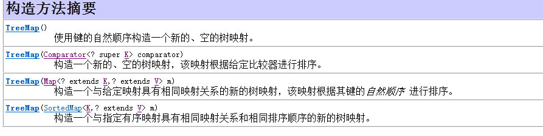
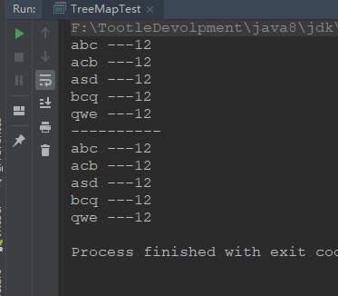
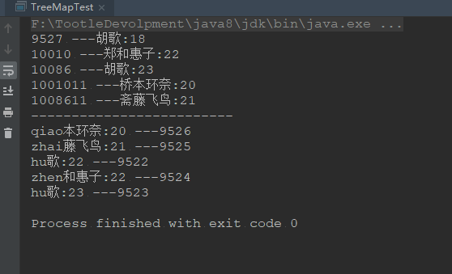
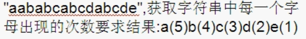
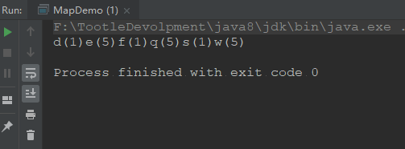
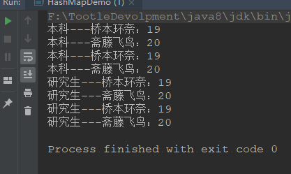
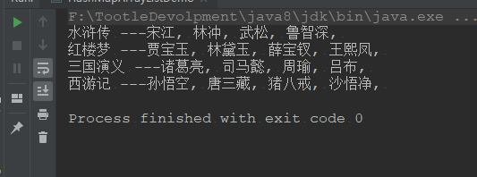
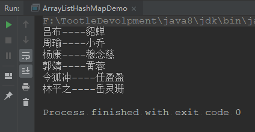
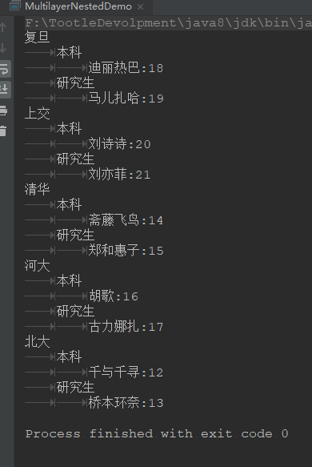

Map集合
一、Map集合
Map接口概述：
- 将键映射到值的对象
- 一个映射不能包含重复的键
- 每一个键最多只能映射到一个值
Map接口和Collection接口的不同
- Map是双列的，Collection是单列的
- Map的键唯一，Collection的子体系Set是唯一的
- Map集合的数据结构针对键有效，和值无关，Collection集合的数据元素是针对元素有效
二、Map集合功能概述
- 添加功能
- V put(K key,V value) : 添加元素
- 删除功能
- void clear() : 移出所有键值对元素
- V remove(Object key)：根据键删除值对应的元素，并把值返回
- 判断功能
- boolean containsKey(Object Key)
- boolean containsValue(Object value)
- boolean isEmpty() : 判断集合是否为空
- 获取功能
- V get(Object key) : 根据键获取值
- Set<Map.Entry<K,V>> entrySet()
- Set
keySet() : 获取元素中所有值的集合 - Collection
values() : 获取集合中所有值的集合 - 长度功能
- int size() : 返回集合中键值对的对数
JDK1.8新增功能：
- default V getOrDefault(Object key,V defaultValue)：返回到指定键所映射的值，或 defaultValue如果此映射包含该键的映射。
- default void forEach(BiConsumer<? super K,? super V> action)：对此映射中的每个条目执行给定的操作，直到所有条目都被处理或操作引发异常。 除非实现类另有指定，否则按照进入设置迭代的顺序执行操作（如果指定了迭代顺序）。操作引发的异常被转发给调用者。
- default void replaceAll(BiFunction<? super K,? super V,? extends V> function)：将每个条目的值替换为对该条目调用给定函数的结果，直到所有条目都被处理或该函数抛出异常。 函数抛出的异常被转发给调用者
- default V putIfAbsent(K key,V value)：如果指定的键尚未与值相关联（或映射到 null ）将其与给定值相关联并返回 null ，否则返回当前值。
- default boolean remove(Object key,Object value)：仅当指定的密钥当前映射到指定的值时删除该条目。
- default boolean replace(K key,V oldValue,V newValue)：仅当当前映射到指定的值时，才能替换指定键的条目。
- default V replace(K key,V value)：只有当目标映射到某个值时，才能替换指定键的条目。
- default V computeIfAbsent(K key,Function<? super K,? extends V> mappingFunction)：如果指定的键尚未与值相关联（或映射到null ），则尝试使用给定的映射函数计算其值，并将其输入到此映射中，除非null 。如果函数返回null则不记录映射。 如果函数本身引发（未检查）异常，则异常被重新引导，并且不记录映射。
- default V computeIfPresent(K key,BiFunction<? super K,? super V,? extends V> remappingFunction)：如果指定的密钥的值存在且非空，则尝试计算给定密钥及其当前映射值的新映射。 如果函数返回null ，则删除映射。 如果函数本身引发（未检查）异常，则异常被重新引导，并且当前映射保持不变。
- default V compute(K key,BiFunction<? super K,? super V,? extends V> remappingFunction):尝试计算指定密钥及其当前映射值的映射（如果没有当前映射，则null ）。
- default V merge(K key,V value,BiFunction<? super V,? super V,? extends V> remappingFunction) :如果指定的键尚未与值相关联或与null相关联，则将其与给定的非空值相关联。 否则，将关联值替换为给定重映射函数的结果，如果结果为null 。 当组合键的多个映射值时，该方法可能是有用的。
三、功能测试
测试代码及解释看下面代码：
public class MapDemo {
public static void main(String[] args) {
Map<String, Integer> map = new HashMap<>();
System.out.println("map是否为空："+map.isEmpty());
map.put("郑合惠子", 20);
map.put("桥本环奈", 20);
map.put("斋藤飞鸟", 21);
map.put("胡歌", 20);
map.put("asdasd", 20);
map.put("qwe", 12);
map.put("qw", 12);
map.put("q", 12);
System.out.println("map的大小为："+map.size());
//遍历Map，方法一
Set<Map.Entry<String, Integer>> entrySet = map.entrySet();
for (Map.Entry<String, Integer> entry : entrySet) {
String key = entry.getKey();
Integer value = entry.getValue();
System.out.println( key + " ---" + value);
}
System.out.println("--------------------");
//查看键中是否含有 "斋藤飞鸟"
System.out.println("键中是否含有\"斋藤飞鸟\"："+map.containsKey("斋藤飞鸟"));
System.out.println("---------------------");
//查看值中是否含有 20
System.out.println("值中是否含有20："+map.containsValue(20));
System.out.println("---------------------");
//查看map是否为空
System.out.println("map是否为空"+map.isEmpty());
System.out.println("---------------------");
//删除元素
System.out.println("是否已删除键为\"asdasd\"的值："+map.remove("asdasd"));
System.out.println("是否已删除键为\"q\",值为12的元素："+map.remove("q", 12));
System.out.println("---------------------");
//更新key为"qwe"value为12的元素，value更新为23
System.out.println("更新key为\"qwe\"value为12的元素，value更新为23："+map.replace("qwe", 12, 23));
System.out.println("是否已更新键为\"qw\"值为21的元素："+map.replace("qw", 21));
System.out.println("---------------------");
//遍历Map，方法二
//因为由API我们知道keySet()方法
Set<String> keySet = map.keySet();
for (String key : keySet) {
Integer value = map.get(key);
System.out.println( key + " ---" + value);
}
System.out.println("---------------------");
System.out.println(map.keySet());
System.out.println(map.values());
}
}遍历方法一和方法二的区别：
四、HashMap集合
基于哈希表的 Map 接口的实现。此实现提供所有可选的映射操作，并允许使用 null 值和 null 键。（除了非同步和允许使用 null 之外，HashMap 类与 Hashtable 大致相同。）此类不保证映射的顺序，特别是它不保证该顺序恒久不变。
方法和Map方法一样，不需要特意记
看下面例子分析：
public class HashMapDemo {
public static void main(String[] args) {
HashMap<String, Integer> hashMap = new HashMap<>();
hashMap.put("郑合惠子", 20);
hashMap.put("桥本环奈", 20);
hashMap.put("斋藤飞鸟", 21);
hashMap.put("胡歌", 20);
hashMap.put("桥本环奈", 22);
Set<String> stringKey = hashMap.keySet();
for (String key : stringKey) {
Integer value = hashMap.get(key);
System.out.println( key + " ---" + value);
}
}
}运行结果：
由运行结果我们可以看出HashMap不重复，且如果key重复，那么，value将会是最新的value。
学号为键学生为值
public class HashMapDemo {
public static void main(String[] args) {
HashMap<Integer, Student> hashMap = new HashMap<>();
Student s1 = new Student("桥本环奈",20);
Student s2 = new Student("斋藤飞鸟",21);
Student s3 = new Student("郑和惠子",22);
Student s4 = new Student("胡歌",23);
hashMap.put(9527, s1);
hashMap.put(9526, s2);
hashMap.put(9525, s3);
hashMap.put(9524, s4);
Set<Integer> keySet = hashMap.keySet();
for (Integer key : keySet) {
Student value = hashMap.get(key);
System.out.println(key + "-----" +value.getName()+":"+value.getNum());
}
}
}public class Student {
private String name;
private Integer num;
public Student() {
}
public Student(String name, Integer num) {
this.name = name;
this.num = num;
}
public String getName() {
return name;
}
public void setName(String name) {
this.name = name;
}
public Integer getNum() {
return num;
}
public void setNum(Integer num) {
this.num = num;
}
@Override
public String toString() {
return "Student{" +
"name='" + name + '\'' +
", num=" + num +
'}';
}
}运行结果如下：
学生为键，学号为值
public class HashMapDemo {
public static void main(String[] args) {
HashMap<Student, String> hashMap = new HashMap<>();
Student s1 = new Student("桥本环奈",20);
Student s2 = new Student("斋藤飞鸟",21);
Student s3 = new Student("郑和惠子",22);
Student s4 = new Student("胡歌",23);
hashMap.put( s1,"9527");
hashMap.put(s2,"9526");
hashMap.put(s3,"9525");
hashMap.put( s4,"9524");
Set<Student> keySet = hashMap.keySet();
for (Student key : keySet) {
String value = hashMap.get(key);
System.out.println(key.getName()+":"+key.getNum() + "-----" +value);
}
}
}public class Student {
private String name;
private Integer num;
public Student() {
}
public Student(String name, Integer num) {
this.name = name;
this.num = num;
}
public String getName() {
return name;
}
public void setName(String name) {
this.name = name;
}
public Integer getNum() {
return num;
}
public void setNum(Integer num) {
this.num = num;
}
@Override
public String toString() {
return "Student{" +
"name='" + name + '\'' +
", num=" + num +
'}';
}
}运行结果：
五、LinkedHashMap集合
Map 接口的哈希表和链接列表实现，具有可预知的迭代顺序。此实现与 HashMap 的不同之处在于，后者维护着一个运行于所有条目的双重链接列表。此链接列表定义了迭代顺序，该迭代顺序通常就是将键插入到映射中的顺序（插入顺序）。注意，如果在映射中重新插入 键，则插入顺序不受影响。
我们发现API中说道，Map 接口的哈希表和链接列表实现，具有可预知的迭代顺序，说明具有顺序（此处的有序是指，怎样put进map就怎样出来）
public class LinkedHashMapDemo {
public static void main(String[] args) {
LinkedHashMap<String, Integer> linkedHashMap = new LinkedHashMap<>();
linkedHashMap.put("qwe", 12);
linkedHashMap.put("asd", 12);
linkedHashMap.put("acb", 12);
linkedHashMap.put("abc", 12);
linkedHashMap.put("bcq", 12);
Set<String> setKey = linkedHashMap.keySet();
for (String key : setKey) {
Integer value = linkedHashMap.get(key);
System.out.println( key + " ---" + value);
}
}
}运行结果：
有结果我们发现他就是怎样put进map就怎样出来的，说明LinkedHashMap是有序的，
由Hash表确保唯一性，由链表保证键的有序
六、TreeMap集合
基于红黑树（Red-Black tree）的 NavigableMap 实现。该映射根据其键的自然顺序进行排序，或者根据创建映射时提供的 Comparator 进行排序，具体取决于使用的构造方法。
我们前面在学习TreeSet时，我们就知道TreeSet底层是红黑树，而且通过源码我们知道，TreeSet是通过实现实例化TreeMap对象来进行添加元素的，所以我们应该想到TreeMap也应该有排序功能，而且也应该一种自然排序，一种构造器排序。而且我们用过查看API我们发现真的是这样的。构造器如下：

自然排序demo如下：
public class TreeMapTest {
public static void main(String[] args) {
TreeMap<String, Integer> treeMap = new TreeMap<>();
treeMap.put("qwe", 12);
treeMap.put("asd", 12);
treeMap.put("acb", 12);
treeMap.put("abc", 12);
treeMap.put("bcq", 12);
Set<String> keySet = treeMap.keySet();
for (String key : keySet) {
Integer value = treeMap.get(key);
System.out.println( key + " ---" + value);
}
System.out.println("----------");
Set<Map.Entry<String, Integer>> entrySet = treeMap.entrySet();
for (Map.Entry<String, Integer> entry : entrySet) {
String key = entry.getKey();
Integer value = entry.getValue();
System.out.println( key + " ---" + value);
}
}
}运行结果如下：

学号为键学生为值
public class Student {
private String name;
private Integer num;
public Student() {
}
public Student(String name, Integer num) {
this.name = name;
this.num = num;
}
public String getName() {
return name;
}
public void setName(String name) {
this.name = name;
}
public Integer getNum() {
return num;
}
public void setNum(Integer num) {
this.num = num;
}
@Override
public String toString() {
return "Student{" +
"name='" + name + '\'' +
", num=" + num +
'}';
}
}public class TreeMapTest {
public static void main(String[] args) {
TreeMap<Integer, Student> treeMap = new TreeMap<>();
Student s1 = new Student("桥本环奈",20);
Student s2 = new Student("斋藤飞鸟",21);
Student s3 = new Student("郑和惠子",22);
Student s4 = new Student("胡歌",23);
Student s5 = new Student("胡歌",18);
treeMap.put(1001011,s1);
treeMap.put(1008611,s2);
treeMap.put(10010,s3);
treeMap.put(10086,s4);
treeMap.put(9527,s5);
Set<Integer> keySet = treeMap.keySet();
for (Integer key : keySet) {
Student value = treeMap.get(key);
System.out.println( key + " ---" + value.getName()+":"+value.getNum());
}
System.out.println("-------------------------");
TreeMap<Student, Integer> treeMap1 = new TreeMap<>((student1, student2) -> {
//int num = student1.getName().compareTo(student2.getName());
int num2 = (student1.getNum() - student2.getNum());
int num3 = num2 == 0 ? student1.getName().compareTo(student2.getName()):num2;
return num3;
});
Student s6 = new Student("qiao本环奈",20);
Student s7 = new Student("zhai藤飞鸟",21);
Student s8 = new Student("zhen和惠子",22);
Student s9 = new Student("hu歌",23);
Student s10 = new Student("hu歌",22);
treeMap1.put(s6,9526);
treeMap1.put(s7,9525);
treeMap1.put(s8,9524);
treeMap1.put(s9,9523);
treeMap1.put(s10,9522);
Set<Map.Entry<Student, Integer>> entrySet = treeMap1.entrySet();
for (Map.Entry<Student, Integer> entry : entrySet) {
Student key = entry.getKey();
Integer value = entry.getValue();
System.out.println( key.getName()+":"+key.getNum() + " ---" + value);
}
}
}运行结果：

小案例：

代码如下：
public class MapDemo {
public static void main(String[] args) {
TreeMap<Character, Integer> treeMap = new TreeMap<>();
String s = "qweqweqweqweqwesdf";
//首先把字符串转化为字符数组
char[] arr = s.toCharArray();
for (char ch : arr) {
Integer i = treeMap.get(ch);
if (i == null) {
treeMap.put(ch, 1);
} else {
i++;
treeMap.put(ch, i);
}
}
Set<Character> keySet = treeMap.keySet();
for (Character key : keySet) {
Integer value = treeMap.get(key);
System.out.print( key + "(" + value+")");
}
}
}运行结果：

七、Map集合嵌套案例
HashMap嵌套HashMap
public class HashMapDemo {
public static void main(String[] args) {
HashMap<String, HashMap<String, Integer>> hashMap = new HashMap<>();
HashMap<String, Integer> hashMap1 = new HashMap<>();
hashMap1.put("斋藤飞鸟", 20);
hashMap1.put("桥本环奈", 19);
HashMap<String, Integer> hashMap2 = new HashMap<>();
hashMap2.put("胡歌", 21);
hashMap2.put("郑和惠子", 18);
hashMap.put("本科", hashMap1);
hashMap.put("研究生", hashMap2);
Set<String> setKey = hashMap.keySet();
for (String universityKey : setKey) {
HashMap<String, Integer> universityValue = hashMap.get(universityKey);
Set<String> underGraduate = hashMap1.keySet();
for (String underGraduateKey : underGraduate) {
Integer value = hashMap1.get(underGraduateKey);
System.out.println(universityKey+"---"+underGraduateKey+"："+value);
}
Set<String> Graduate = hashMap1.keySet();
for (String GraduateKey : Graduate) {
Integer value = hashMap1.get(GraduateKey);
System.out.println(universityKey+"---"+GraduateKey+"："+value);
}
}
}
}运行结果：

HashMap嵌套ArrayList
public class HashMapArrayListDemo {
public static void main(String[] args) {
HashMap<String, ArrayList<String>> classic = new HashMap<>();
ArrayList<String> westJourney = new ArrayList<>();
westJourney.add("孙悟空");
westJourney.add("唐三藏");
westJourney.add("猪八戒");
westJourney.add("沙悟净");
ArrayList<String> theStone = new ArrayList<>();
theStone.add("贾宝玉");
theStone.add("林黛玉");
theStone.add("薛宝钗");
theStone.add("王熙凤");
ArrayList<String> waterMargin = new ArrayList<>();
waterMargin.add("宋江");
waterMargin.add("林冲");
waterMargin.add("武松");
waterMargin.add("鲁智深");
ArrayList<String> threeKingdoms = new ArrayList<>();
threeKingdoms.add("诸葛亮");
threeKingdoms.add("司马懿");
threeKingdoms.add("周瑜");
threeKingdoms.add("吕布");
classic.put("西游记", westJourney);
classic.put("水浒传", waterMargin);
classic.put("红楼梦", theStone);
classic.put("三国演义", threeKingdoms);
Set<String> keySet = classic.keySet();
for (String key : keySet) {
StringBuilder sb = new StringBuilder();
ArrayList<String> value = classic.get(key);
for (String s : value) {
sb.append(s).append(", ");
}
String result = sb.toString();
System.out.println( key + " ---" + result);
}
}
}运行结果：

ArrayList嵌套HashMap
public class ArrayListHashMapDemo {
public static void main(String[] args) {
ArrayList<HashMap<String, String>> arrayList = new ArrayList<>();
HashMap<String, String> hashMap = new HashMap<>();
HashMap<String, String> hashMap1 = new HashMap<>();
HashMap<String, String> hashMap2 = new HashMap<>();
hashMap.put("周瑜", "小乔");
hashMap.put("吕布", "貂蝉");
hashMap1.put("郭靖", "黄蓉");
hashMap1.put("杨康", "穆念慈");
hashMap2.put("令狐冲", "任盈盈");
hashMap2.put("林平之", "岳灵珊");
arrayList.add(hashMap);
arrayList.add(hashMap1);
arrayList.add(hashMap2);
for (HashMap<String,String> hashMap3 : arrayList) {
Set<String> set = hashMap3.keySet();
for (String key : set) {
String value = hashMap3.get(key);
System.out.println(key+"----"+value);
}
}
}
}
HashMap嵌套HashMap嵌套ArrayList
public class MultilayerNestedDemo {
public static void main(String[] args) {
HashMap<String, HashMap<String, ArrayList<Student>>> hashMap = new HashMap<>();
HashMap<String, ArrayList<Student>> hashMap1 = new HashMap<>();
HashMap<String, ArrayList<Student>> hashMap2 = new HashMap<>();
HashMap<String, ArrayList<Student>> hashMap3 = new HashMap<>();
HashMap<String, ArrayList<Student>> hashMap4 = new HashMap<>();
HashMap<String, ArrayList<Student>> hashMap5 = new HashMap<>();
ArrayList<Student> arrayList1 = new ArrayList<>();
ArrayList<Student> arrayList2 = new ArrayList<>();
ArrayList<Student> arrayList3 = new ArrayList<>();
ArrayList<Student> arrayList4 = new ArrayList<>();
ArrayList<Student> arrayList5 = new ArrayList<>();
ArrayList<Student> arrayList6 = new ArrayList<>();
ArrayList<Student> arrayList7 = new ArrayList<>();
ArrayList<Student> arrayList8 = new ArrayList<>();
ArrayList<Student> arrayList9 = new ArrayList<>();
ArrayList<Student> arrayList10 = new ArrayList<>();
Student s1 = new Student("千与千寻", 12);
Student s2 = new Student("桥本环奈", 13);
Student s3 = new Student("斋藤飞鸟", 14);
Student s4 = new Student("郑和惠子", 15);
Student s5 = new Student("胡歌", 16);
Student s6 = new Student("古力娜扎", 17);
Student s7 = new Student("迪丽热巴", 18);
Student s8 = new Student("马儿扎哈", 19);
Student s9 = new Student("刘诗诗", 20);
Student s10 = new Student("刘亦菲", 21);
arrayList1.add(s1);
arrayList2.add(s2);
arrayList3.add(s3);
arrayList4.add(s4);
arrayList5.add(s5);
arrayList6.add(s6);
arrayList7.add(s7);
arrayList8.add(s8);
arrayList9.add(s9);
arrayList10.add(s10);
hashMap1.put("本科", arrayList1);
hashMap1.put("研究生", arrayList2);
hashMap2.put("本科", arrayList3);
hashMap2.put("研究生", arrayList4);
hashMap3.put("本科", arrayList5);
hashMap3.put("研究生", arrayList6);
hashMap4.put("本科", arrayList7);
hashMap4.put("研究生", arrayList8);
hashMap5.put("本科", arrayList9);
hashMap5.put("研究生", arrayList10);
hashMap.put("北大", hashMap1);
hashMap.put("清华", hashMap2);
hashMap.put("河大", hashMap3);
hashMap.put("复旦", hashMap4);
hashMap.put("上交", hashMap5);
//第一种 ，运行结果如下
/*Set<String> setKey = hashMap.keySet();
for (String key1 : setKey) {
HashMap<String, ArrayList<Student>> value = hashMap.get(key1);
Set<String> key2 = value.keySet();
for (String key3 : key2) {
ArrayList<Student> array = value.get(key3);
for (Student s : array) {
System.out.println(key1+"---"+key3+"---"+s.getName()+":"+s.getAge());
}
}
}*/
//升级版 ，运行结果如下
Set<String> setKey = hashMap.keySet();
for (String key1 : setKey) {
System.out.println(key1);
HashMap<String, ArrayList<Student>> value = hashMap.get(key1);
Set<String> key2 = value.keySet();
for (String key3 : key2) {
System.out.println("\t"+key3);
ArrayList<Student> array = value.get(key3);
for (Student s : array) {
System.out.println("\t\t"+s.getName()+":"+s.getAge());
}
}
}
}
}运行结果：


八、Hashtable集合
此类实现一个哈希表，该哈希表将键映射到相应的值。任何非null对象都可以用作键或值。为了成功地在哈希表中存储和获取对象，用作键的对象必须实现hashCode方法和equals方法。
注意：Hashtable 中的 table 是小写table
HashMap和Hashtable的区别？
- HashMap线程不安全 效率高，Hashtable 线程安全效率低
- Hashtable 不可以使用null作为键值，HashMap可以
九、总结
Map:
将键映射到值的对象。一个映射不能包含重复的键；每个键最多只能映射到一个值。
Collection和Map的区别
- Map ：存储的是键值形式的元素，键唯一，值可以重复。
- Collection：存储的随机单独形式的元素，子接口Set元素唯一子接口List中元素可重复。
Map接口功能概述
- 添加功能：
- V put(K key,V value)
- 删除功能
- void clear()
- V remove(Object key);
- V remove(K key,V value)
- 判断功能
- containsKey(Object key)
- containsValue(Object value)
- isEmpty()
- 获取功能
- get(Object key);
- Set<Map.entry<K,V>> entrySet()
- Set
keySet() - Collection
values() - 长度功能
- int size()
Map集合的遍历
键找值
for (HashMap<String,String> hashMap3 : arrayList) { Set<String> set = hashMap3.keySet(); for (String key : set) { String value = hashMap3.get(key); System.out.println(key+"----"+value); } }键值对对象找键和值
Set<Map.Entry<Student, Integer>> entrySet = treeMap1.entrySet(); for (Map.Entry<Student, Integer> entry : entrySet) { Student key = entry.getKey(); Integer value = entry.getValue(); System.out.println( key.getName()+":"+key.getNum() + " ---" + value); }